무엇을 만드는 스킬인가요
영상은 세슘 원자시계와 소행성 충돌 장면으로 시작해요. 둘 다 사람이 편집한 영상이 아니라 바이브 코딩으로 만든 영상의 한 부분이에요. 아래 장면을 보면 진공관 숫자판에 1955가 뜨고, 다이얼과 전선이 이어진 장치가 빛을 내요. 전부 코드로 그린 그림이에요.
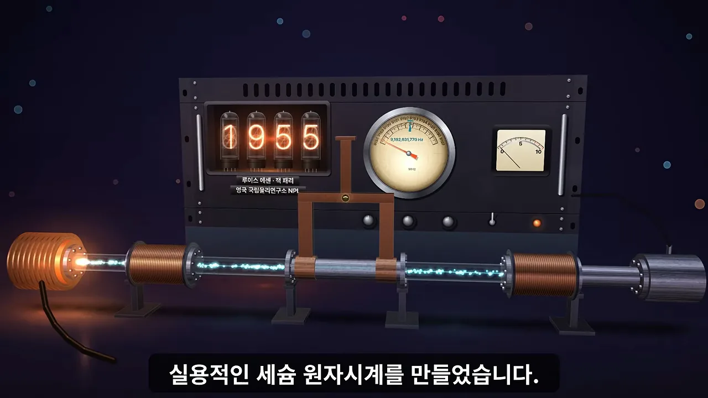
발표자는 코딩 에이전트, 그중에서도 Claude가 영상을 이루는 코드를 잘 만든다고 봐요. 지난 영상에서는 물결, 숫자 카운터, 진자 같은 효과 하나하나를 만드는 스킬을 소개했어요. 아래 장면의 카드들이 그때 다룬 기법이에요.
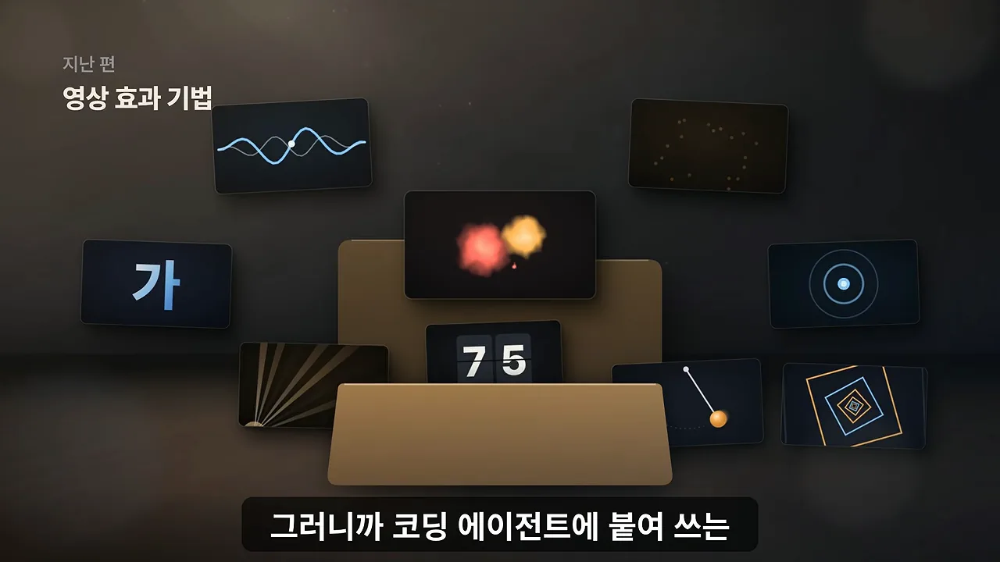
이번 영상은 그 효과들을 엮어 영상 한 편을 통째로 만드는 방법을 다루고, 쓰인 스킬과 소스 코드를 모두 공개해요. 과정을 한 줄로 줄이면 이래요. 주제만 주고 "만들어 줘"라고 하면 그럭저럭 볼 만한 영상이 나오고, 그걸 다듬으면 훨씬 좋아져요.
준비물은 두 가지예요. 아래 화면 왼쪽의 터미널이 Claude Code 같은 코딩 에이전트이고, 오른쪽 폴더가 script-to-motion 스킬이에요. 화면 아래에 스킬 주소가 나와요.
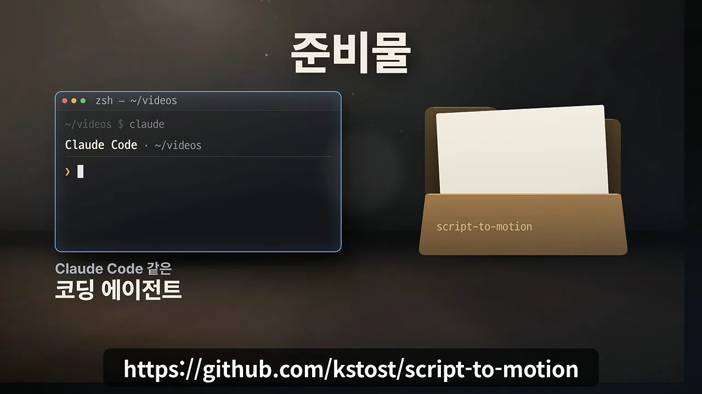
스킬 이름처럼 원래 목표는 대본을 받아 영상으로 바꾸는 거예요. 하지만 대본 없이 주제만 줘도 기획, 자료 조사, 대본 쓰기까지 알아서 해요.
설치하고 한 줄로 요청하기
설치도 에이전트에게 맡겨요. 빈 폴더에서 Claude Code를 열고, 아래 화면처럼 스킬 주소와 함께 한 줄로 요청해요.
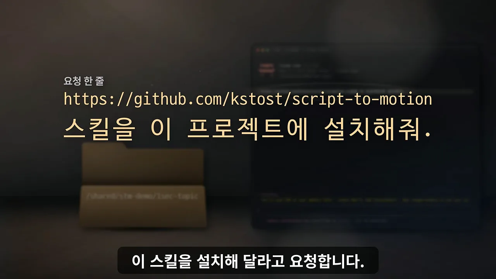
- 빈 폴더에서 Claude Code를 열고 설치를 요청해요 — 위의 한 줄이면 돼요.
- Claude Code가 알아서 준비해요 — 저장소를 받고, 필요한 패키지를 깔고, 영상을 찍는 데 쓰는 브라우저까지 점검해요. 설치가 끝나면 다 됐다고 알려 줘요
- Claude Code를 한 번 껐다 켜요 — 설치한 그 세션에서는 스킬이 보이지 않아요. 다시 켜면 스킬 목록에 script-to-motion이 나타나요
3번이 놓치기 쉬운 부분이에요. 아래 화면 오른쪽을 보면, 설치한 세션에서 /script-to를 쳤을 때 빨간 글씨로 No commands match가 떠요.
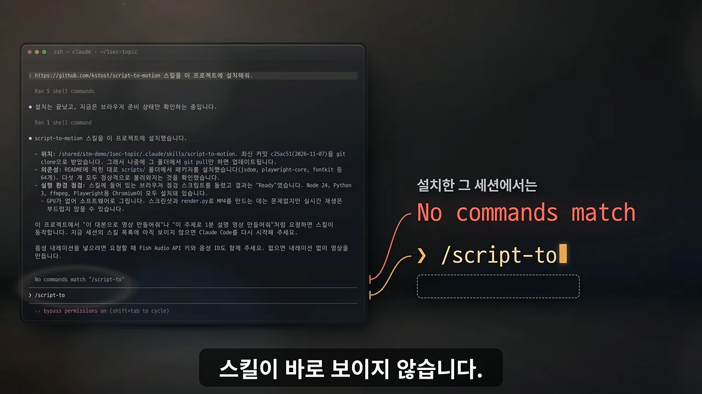
이제 정말 주제만 주고 맡겨 봐요. 요청은 "script-to-motion 스킬 이용해서 '1초는 누가 어떻게 정했을까?'라는 주제의 영상을 만들어 줘" 한 줄이에요. 길이도 분위기도 정하지 않았어요. Claude Code는 끝까지 혼자 만들고 다 됐다고 알려 와요.
완성된 영상은 동영상 파일이 아니라 폴더 하나로 나와요. 아래 목록에서 index.html이 재생 파일이고, research.md(조사), storyboard.md(기획), script.txt(대본), render.py(영상 굽기)가 함께 들어 있어요.
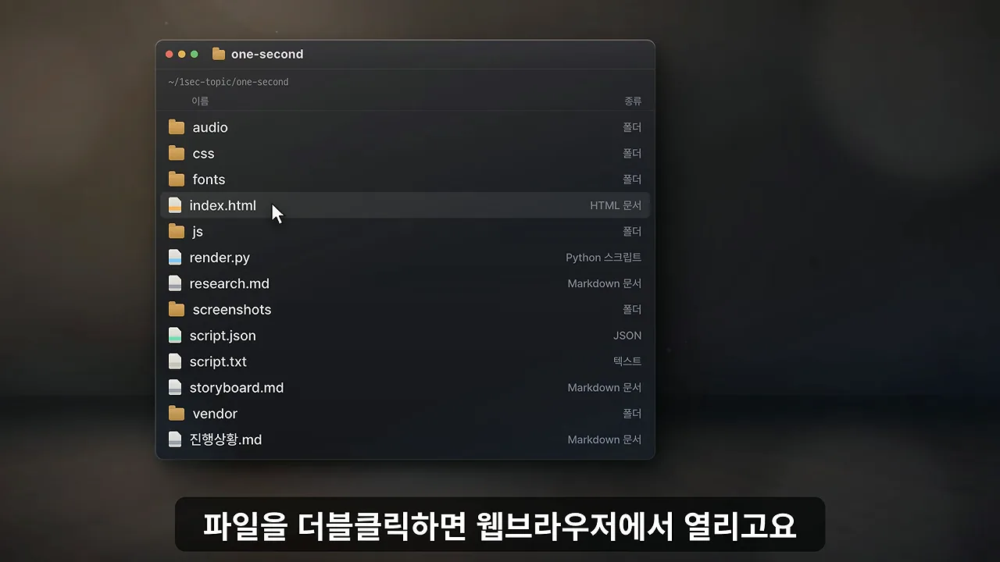
브라우저가 열리면 검은 화면에 로딩 막대가 차오르고, 다 차면 바로 재생이 시작돼요. 영상은 "지금 막 1초가 지나갔습니다"로 열고, 1초가 지금까지 세 가지 기준으로 정해졌다고 답부터 말해요.
스킬이 안에서 하는 일
방금 본 1초 영상은 Claude Code가 주제 하나로 조사하고 기획해서 만든 거예요. 그 안에서 무슨 일이 일어났는지 순서대로 보면 아래 그림과 같아요. 여기까지는 사람에게 묻지 않고 혼자 진행해요.
조사와 기획
자료 조사에서는 영상에 들어갈 사실마다 출처를 확인해 마크다운 보고서로 남겨요. 필요하면 직접 계산하고, 조사 중에 최신 정보가 나오면 낡은 정보를 찾아 바꿔요. 아래 화면에서 research.md는 '이집트: 낮 12시간, 밤 12시간'처럼 사실마다 출처(NIST(National Institute of Standards and Technology), Britannica 등)를 붙여 놨고, 겹쳐 놓인 storyboard.md에는 시청자(과학·역사 교양 영상을 보는 일반 시청자)와 메시지(1초는 한 사람이 정한 게 아니다)가 적혀 있어요.
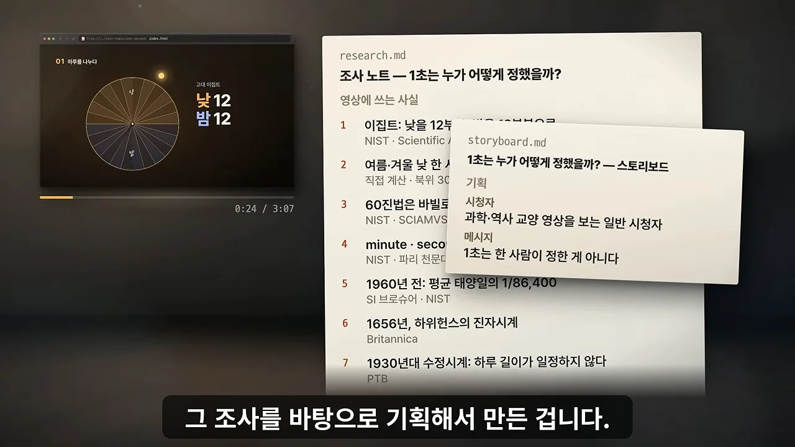
기획에서는 누가 볼지, 무엇을 전할지, 장면마다 무엇을 보여 줄지를 정해요. 주제에 어울리는 시각 테마도 골라 영상 전체에 똑같이 입혀요. 1초 영상의 금빛·검정 톤이 그렇게 정해졌어요.
대본과 장면
대본은 귀로 듣기 자연스럽게 써요. 숫자는 뜻을 풀어 주고, 처음 나오는 용어는 쉬운 말로 바꿔요. 아래 화면의 11번 줄이 그 예예요. '86,400'을 그냥 읽지 않고 "1초는 하루를 8만 6400개로 나눈 한 조각"이라고 풀었어요. 오른쪽 script.txt는 모두 32줄이에요.
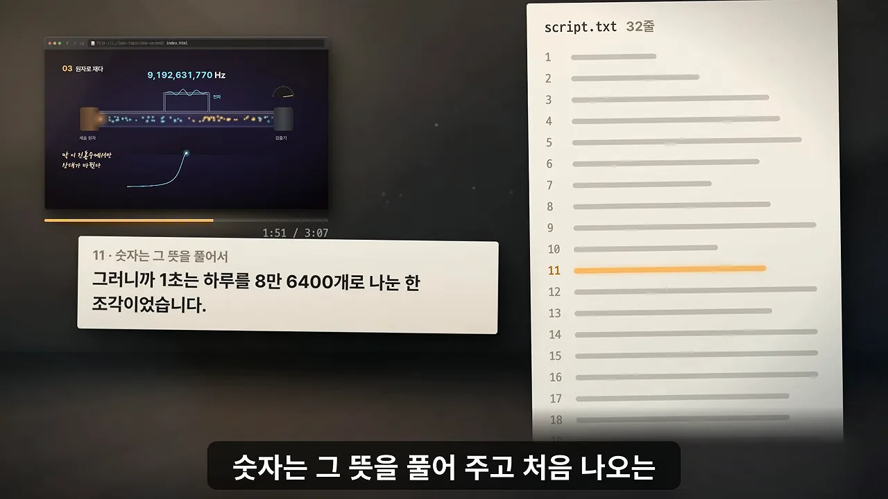
장면을 만들 때는 지난 영상의 효과 스킬에서 어울리는 기법(예: 부채꼴 마스크 와이프)을 골라 와요. 기법을 그대로 붙이지 않고 원리만 가져와 이 영상 내용에 맞게 새로 만들어요. 이렇게 만든 장면은 MP4가 아니라 웹 페이지 하나로 묶여요. 그래서 4K에서도 글자가 또렷하고, 대본을 고치면 장면 타이밍도 다시 계산돼요.
검수와 고도화
검수 단계에서는 스킬에 내장된 화면 확인 도구로 장면마다 직접 찍어 봐요. 아래 화면 오른쪽의 격자가 그렇게 찍은 시트예요. 에이전트는 이걸 보고 겹치거나 잘린 글자가 없는지 확인하고 스스로 고쳐요.
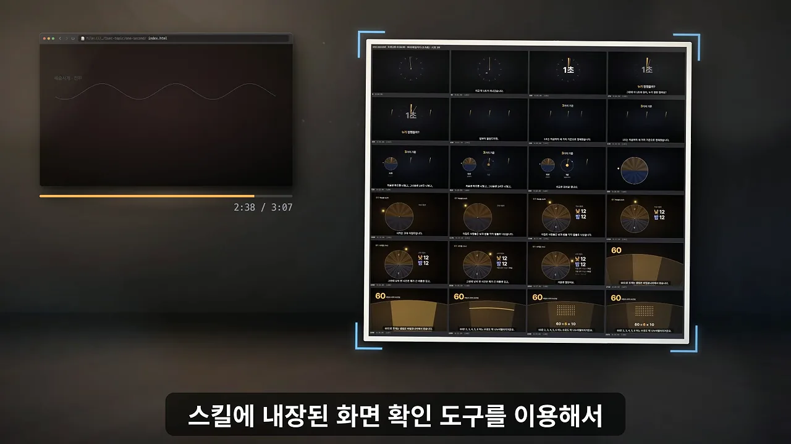
영상이 다 만들어지면 Claude Code가 따로 띄운 디자인 검수 에이전트가 연출, 디자인, 모션을 살펴보고 부족한 장면을 다시 만들게 해요. 이 단계는 뒤에서 점수 화면과 함께 다시 나와요.
그래도 발표자는 사람의 검수가 빠질 수 없다고 강조해요. 기술은 AI(Artificial Intelligence)가 해결해 줘도, 가치 있는 콘텐츠가 되려면 사람의 뜻이 온전히 담겨야 하기 때문이에요.
검수용 플레이어와 A·S 키
사람이 영상을 보고 의견을 주기 쉽도록, 스킬은 만드는 영상에 검수용 플레이어를 붙여 줘요. 앞에서 1초 영상이 재생된 브라우저 화면이 바로 그 플레이어예요. 아래 화면처럼 화면에는 버튼이 하나도 없어요. 영상만 크게 보이고, 전부 키보드로 다뤄요.
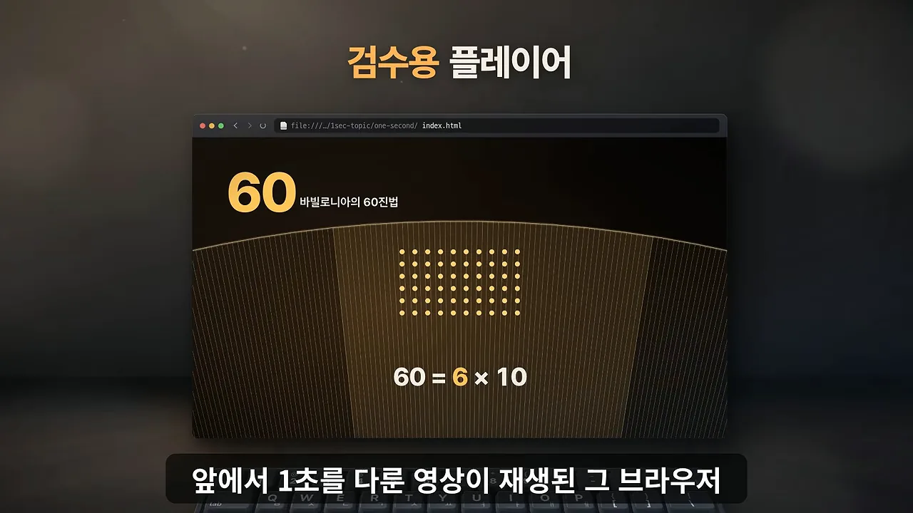
보고 녹화할 때 쓰는 키
| 키 | 하는 일 |
|---|---|
| Space | 멈춤, 한 번 더 누르면 이어서 재생 |
| → / ← | 0.5초 앞으로 / 뒤로 |
| Shift + → / ← | 5초씩 크게 이동 |
| 0 | 맨 처음으로 |
| 마침표 / 쉼표 (멈춘 상태) | 한 프레임 앞으로 / 뒤로 |
| Shift + > / < | 배속을 한 단계씩 올려요(최대 3배) / 내려요(최소 0.25배) |
| C | 자막 끄고 켜기. 처음엔 켜져 있고, 끄면 브라우저가 그 상태를 기억해요 |
| F | 전체 화면 |
| R | 처음부터 1배속으로 다시 재생 |
배속은 빨리 훑어보기 위한 기능이에요. 영상 자체의 속도는 바뀌지 않아요. 아래 화면은 Shift와 오른쪽 꺾쇠를 눌러 3배속으로 올린 순간이에요. 키보드의 꺾쇠 자리에 '3x'가 떠 있어요.
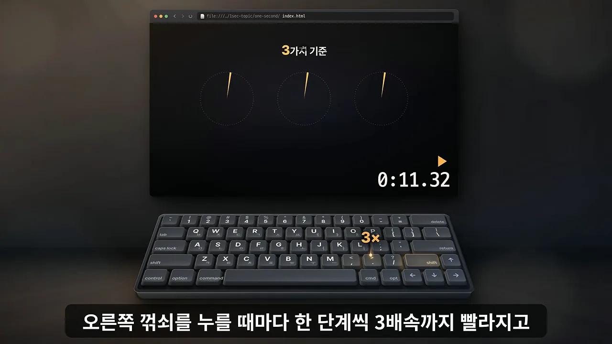
F와 R은 화면 녹화로 영상 파일을 만들 때 써요. F로 전체 화면을 켜고, 녹화를 시작한 뒤 R을 누르면 돼요. 다만 계산이 많은 장면에서는 녹화 중에 프레임이 빠질 수 있어요. 이 문제는 다음 섹션의 render.py로 풀어요.
A 키: 고칠 장면을 에이전트에게 보여 주기
Claude Code가 만든 영상을 보다 보면 고치고 싶은 곳이 꼭 나와요. 1초 영상 앞부분이 그랬어요. 아래 화면 아래쪽 자막에서 내레이션은 아직 "세 가지"(동그라미 친 곳)를 말하는 중인데, 금빛 조각 세 개가 이미 떠 있어요.
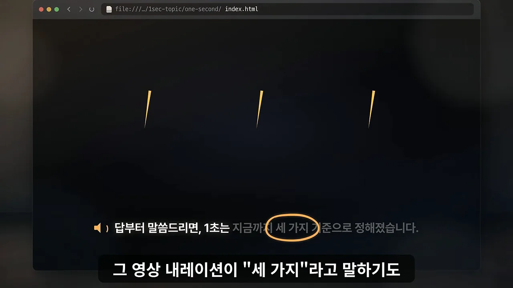
그 지점에서 멈추고 A를 누르면, 지금 순간의 앞뒤 1초를 이미지로 찍어 보라는 명령이 복사돼요. 아래 화면의 터미널에 붙여 넣은 게 그 명령이에요. --screenshot --from 7.03 --to 9.03 --gapframe 10은 7.03초부터 9.03초까지 10프레임마다 찍으라는 뜻이고, 괄호 안에 'script-to-motion 스킬의 render.py로 확인하라'는 안내가 붙어 있어요.
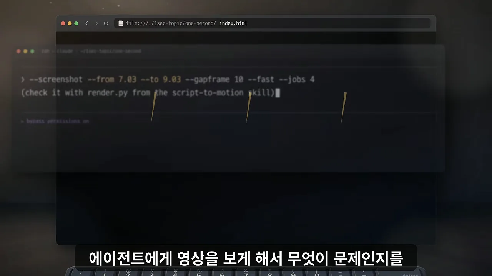
Claude Code는 그 명령대로 render.py를 실행해 2초를 한 장의 이미지, 즉 시트로 모아요. 아래 화면 가운데 칸을 보면 프레임 번호 482, 시각 0:08.03, 대사 번호 c03이 적혀 있어요. 그래서 에이전트도 어느 순간인지 바로 알아요.
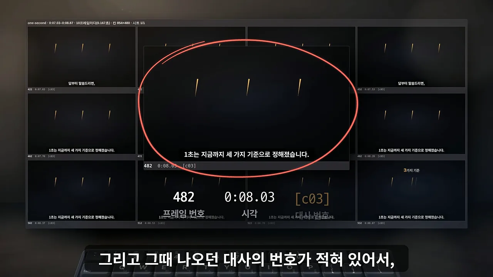
Claude Code는 시트를 보고 바로 원인을 찾았어요. 금빛 조각 세 개를 등장 전에 숨겨 두지 않아서 장면 시작부터 떠 있었던 거예요. 그래서 처음엔 조각을 하나만 보여 주다가, 내레이션이 "세 가지"라고 말하는 순간 셋으로 갈라지게 고쳤어요. 브라우저를 새로 고침하면 멈춰 둔 지점에서 바로 확인할 수 있어요.
- 문제가 보이는 순간 A를 눌러요
- Claude Code에 붙여 넣고, 무엇이 왜 마음에 안 드는지 한 문장으로 적어요
- 에이전트가 시트를 찍어 원인을 찾고 고쳐요 새로 고침하면 멈춰 둔 지점에서 고친 결과가 보여요
S 키: 대사와 타이밍을 고칠 때
화면이 아니라 대사나 타이밍을 고칠 때는 A 대신 S를 눌러요. 아래 화면처럼 영상의 시각(0:08.03)과 그때 나오던 대사가 한 줄로 복사돼요. 이걸 붙여 넣고 고칠 내용을 적으면 돼요.
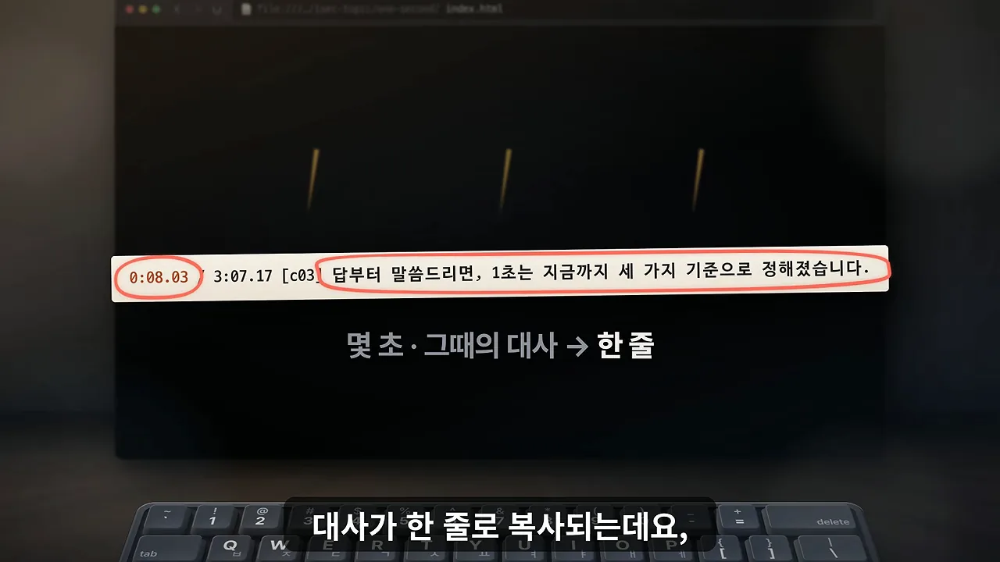
이 단축키들은 한글 입력 상태에서도 그대로 동작해요.
MP4로 굽고 목소리 입히기
render.py로 MP4 굽기
화면 녹화는 프레임이 빠질 수 있어요. 그래서 스킬에는 프레임 걱정 없이 영상 파일을 만드는 방법이 따로 있어요. 앞에서 시트를 찍던 render.py를 영상 폴더 안에서 실행하면 돼요. 아래 화면 위쪽의 8,693 / 11,230은 전체 11,230프레임 중 몇 장째를 찍고 있는지 보여 줘요.
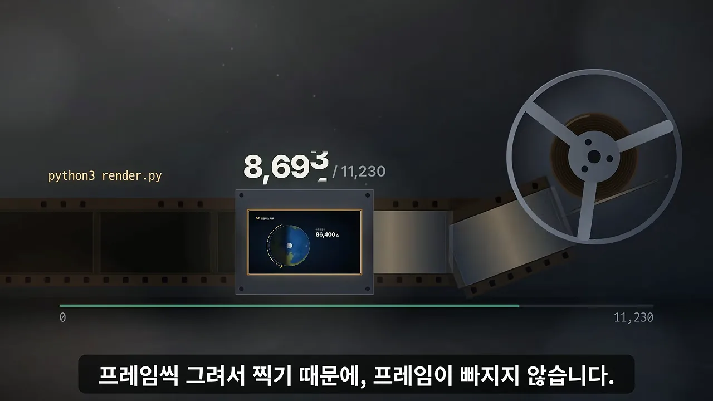
cd one-second && python3 render.py화질은 480p부터 4K까지 고를 수 있어요. 직접 실행하기 번거로우면 Claude Code에 "영상 파일로 만들어 줘"라고 해도 render.py로 알아서 만들어요.
Fish Audio로 목소리 입히기
MP4로 만들기 전에 할 일이 하나 있어요. 내레이션이에요. Claude Code가 처음 만든 영상은 목소리 없이 자막만 있어요. 목소리는 Fish Audio라는 음성 합성 서비스로 입혀요. Fish Audio에서는 목소리를 복제해 여러 개 만들어 둘 수 있고, 목소리마다 ID(Identifier)가 하나씩 붙어요. 그 ID와 API(Application Programming Interface) 키를 건네면 에이전트가 내레이션 오디오를 만들어요. 아래 화면에서 에이전트(Claude Code)가 Fish Audio의 '내 목소리'로 파형을 만들어 내는 모습이에요.
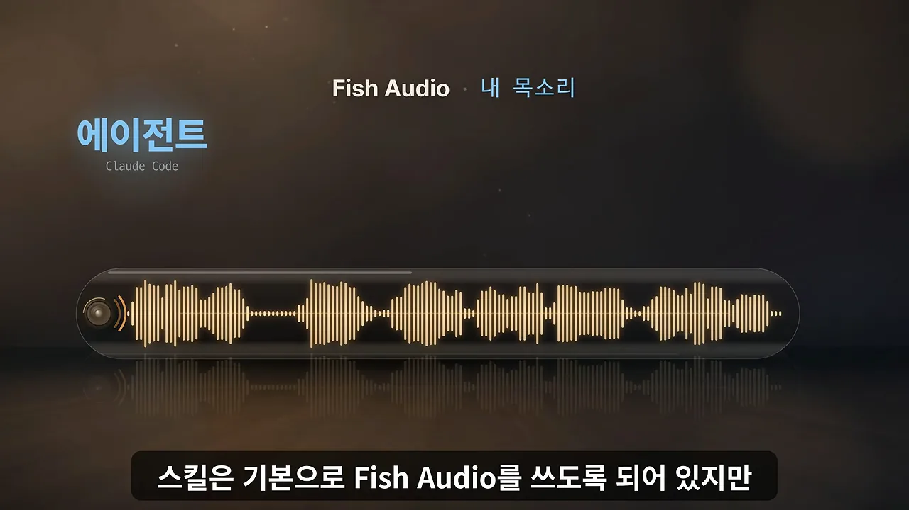
발표자는 스킬이 기본으로 Fish Audio를 쓰지만, 다른 TTS(Text To Speech)를 쓰고 싶으면 그 서비스의 문서를 건네며 에이전트에게 부탁할 수 있다고 말해요.
녹음은 허락한 뒤에만
녹음은 에이전트가 마음대로 시작하지 않아요. 아래 화면의 자물쇠와 '완성 전 대본'이 그 뜻이에요. 대본이 덜 된 상태에서 녹음하면 녹음할 때마다 드는 Fish Audio 크레딧만 낭비돼요. 대본을 확인하고 "녹음해"라고 해야 대본 전체를 녹음해요.
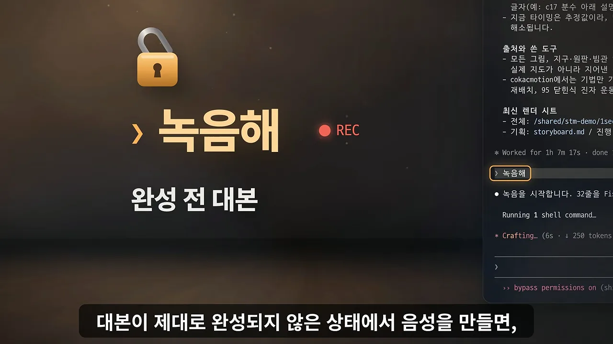
녹음이 끝나면 단어가 실제로 들리는 순간을 재서 화면의 숫자와 강조 효과를 그 단어에 맞춰요. 아래 화면에서 대사 c21의 '1770번'이 들리는 2.91초 지점에 맞춰 9,192,631,770이 떠요. 에이전트는 소리를 들을 수 없어서, 녹음된 목소리의 크기를 숫자로 읽고 단어가 시작하는 순간을 찾아요.
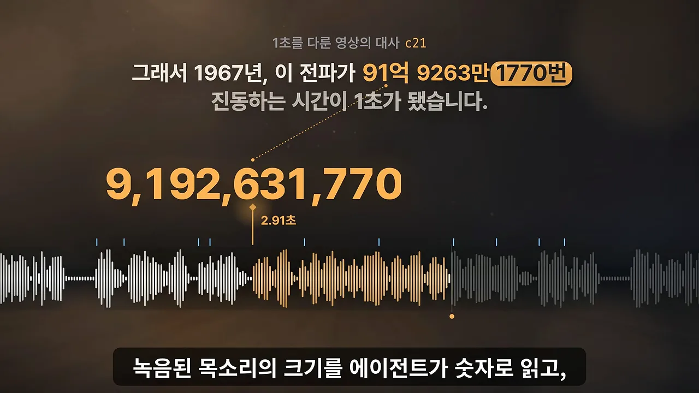
그래서 어색하게 들리는 부분이 있으면 사람이 직접 듣고 알려 줘야 해요.
보면서 고치고, 에이전트가 다시 다듬기
1초 영상을 다시 보니 아쉬운 장면이 있었어요. 같은 구도가 오래 머물거나, 어두운 화면에 작은 글자만 떠 있는 장면이에요. 그래서 영상을 보면서 그런 장면이 나올 때마다 A를 누르고, 무엇이 왜 마음에 안 드는지 적어 보냈어요.
대표적인 예가 광학 시계 장면이에요. "광학 시계가 지금의 원자시계보다 최대 100배 정확하다"는 장면이 "빛이 100배 촘촘하게 떨린다"는 뜻으로 읽혔어요. 아래 화면 왼쪽(고치기 전)은 물결 하나와 빨간 막대 하나뿐이에요. 오른쪽(고친 뒤)은 진동수와 정확도를 따로 나눠 보여 줘요. 이걸 알리자 Claude Code가 출처를 다시 확인하고 이렇게 바꿨어요.
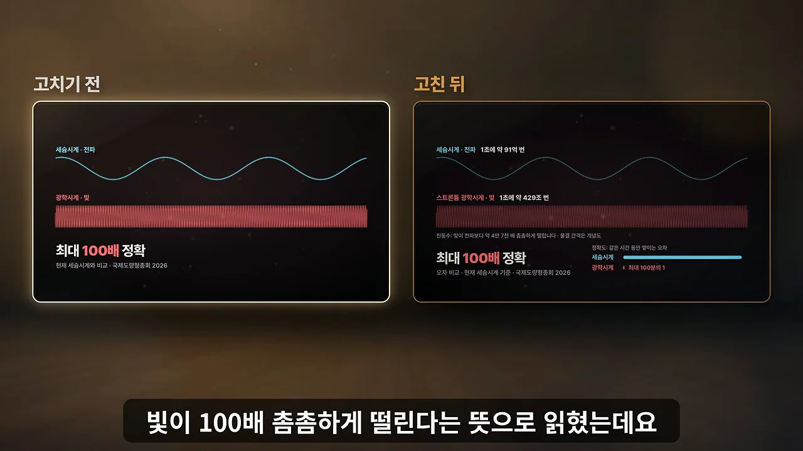
그 뒤로도 몇 차례 고도화를 거쳤고, 그때마다 Claude Code가 장면을 다시 짜서 움직임과 표현을 더했어요. 아래 화면 왼쪽이 처음 한 줄 요청으로 나온 장면, 오른쪽이 보면서 고친 뒤의 같은 장면이에요. 금색 막대 하나였던 장면이 'pars minuta secunda'가 새겨진 입체 장면으로 바뀌었어요.
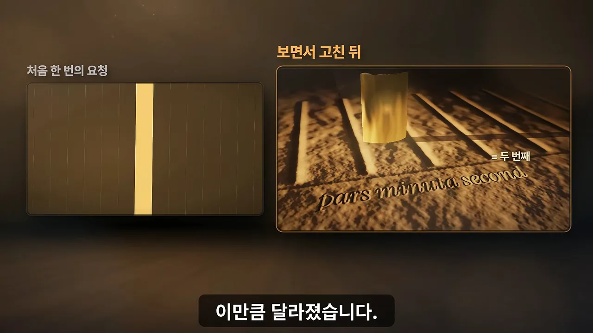
디자인 검수 에이전트가 스스로 하는 일
앞에서 말한 고도화 단계는 디자인 검수 에이전트가 바로 이 과정을 혼자 해 주는 단계예요. 영상을 다 만들면 따로 띄운 이 에이전트가 화면만 보고 세 항목에 5점 만점으로 점수를 매겨요. 아래 화면의 막대 세 개가 연출, 디자인, 모션 점수예요.
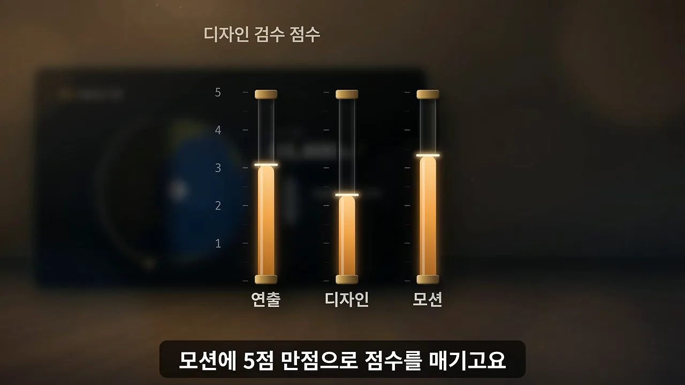
flowchart LR A["영상 완성"] --> B["검수 에이전트가
연출·디자인·모션 채점
(5점 만점)"] B --> C{"모두 4점 넘음
또는 3회 채움?"} C -- "아니요" --> D["점수 낮은 장면을
처음부터 다시 설계"] D --> B C -- "예" --> E["사람에게 전달"]
점수가 낮은 장면은 꾸미는 대신 처음부터 다시 설계해요. 그리고 모든 부분이 4점을 넘거나 세 번을 채울 때까지 되풀이해요. 아래 화면 아래의 1회·2회·3회 표시와 오른쪽 4점 점선이 그 기준이에요.
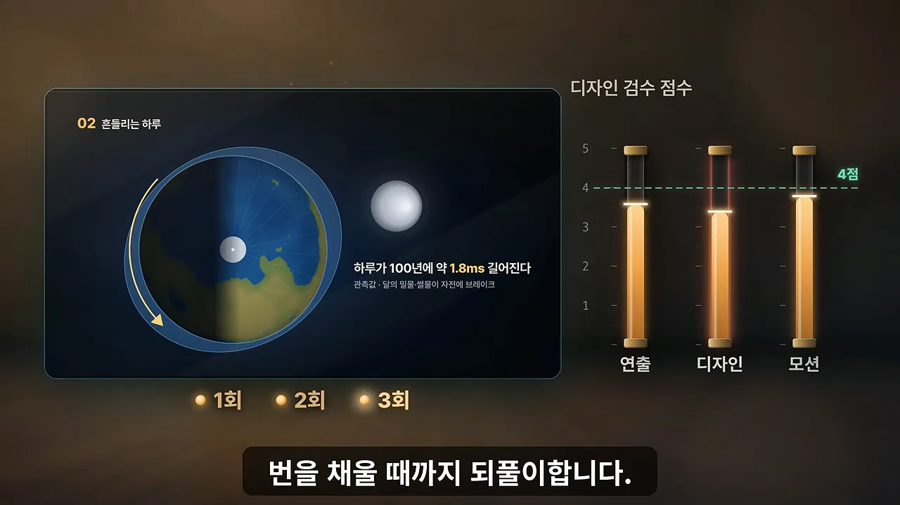
발표자는 지금 보고 있는 이 소개 영상도 같은 단계를 거쳐 평균 1.7점에서 시작해 3점대까지 올라왔다고 말해요. 세 번을 채워도 4점에 못 미칠 수 있다는 뜻이고, 그래서 사람이 보고 고치는 단계가 여전히 필요해요.
완성작 두 편: 1초와 공룡
마지막으로 이렇게 다듬으면 어디까지 나오는지 완성작 두 편을 보여 줘요. 두 편은 요청 방식이 달라요. 1초 영상은 주제 한 줄로, 공룡 영상은 기획서로 시작했어요.
완성작 1: 1초는 누가 어떻게 정했을까
3분 정도 되는 1초 영상의 완성본이에요. 처음 한 줄 요청으로 나온 어두운 화면과 비교하면 장면이 훨씬 입체적이에요. 아래 장면은 고대 이집트 부분이에요. 해시계 위에 그림자가 드리우고, 아래 자막은 낮의 한 시간이 여름엔 길고 겨울엔 짧았다고 말해요.
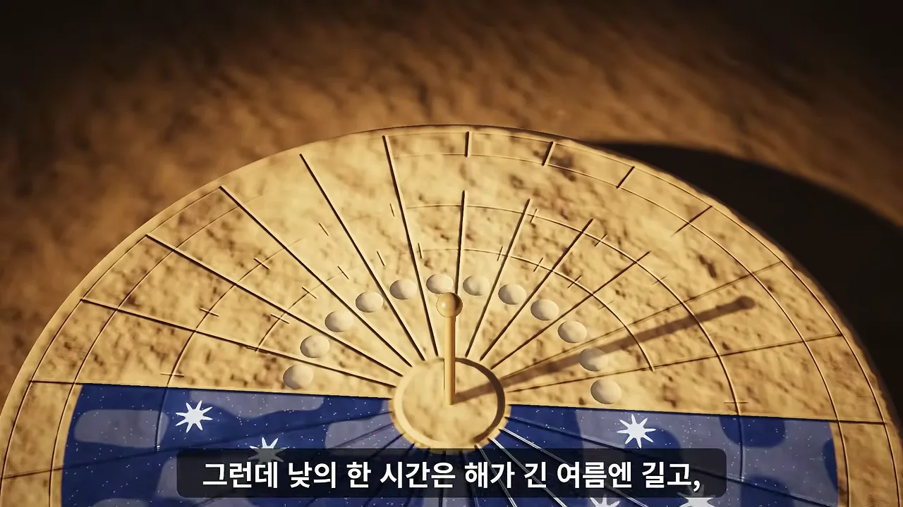
영상의 줄거리는 1초를 정한 기준이 세 번 바뀌었다는 거예요.
| 기준 | 언제 | 1초를 어떻게 정했나 |
|---|---|---|
| 하루 | 고대부터 | 이집트는 낮과 밤을 각각 12로, 바빌로니아의 60진법으로 한 시간을 60분·60초로 나눠요. 1초는 하루의 1/86,400이에요 |
| 1년 | 1960년 | 지구 자전이 일정하지 않아 국제도량형총회가 기준을 바꿔요. 1900년의 1년을 약 3,156만 조각으로 나눈 하나예요 |
| 원자 | 1967년 | 1955년 에센과 패리가 만든 세슘 원자시계를 바탕으로, 세슘 전파가 9,192,631,770번 진동하는 시간이 1초가 돼요 |
영상은 이어서 윤초와 다음 기준을 다뤄요. 1972년부터 윤초를 27번 넣었지만 컴퓨터 시스템에 말썽을 일으켰고, 2026년 10월 총회가 2027년 5월부터 윤초를 넣지 않기로 했다고 해요. 다음 후보는 광학 시계예요. 아래 장면은 같은 시간 동안 쌓이는 오차를 비교해요. 위의 세슘시계 선은 크게 출렁이고, 아래 광학시계 선은 거의 평평해요.
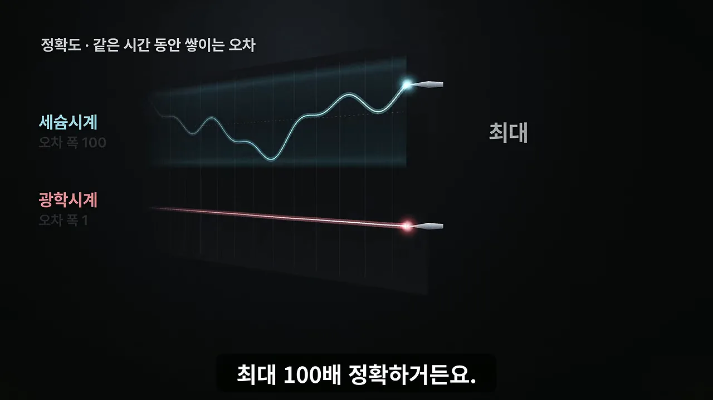
영상은 2030년 총회에 새 정의안을 올리는 게 목표라고 말하고, 1초는 어느 한 사람이 정한 게 아니라고 정리해요.
완성작 2: 공룡은 왜, 어떻게 멸종했을까
이번에는 주제 한 줄 대신, 만들고 싶은 영상을 미리 정리한 기획서를 Claude Code에 줬어요. 아래 기획서를 보면 길이(3분 안팎), 대상(공룡은 좋아하지만 멸종은 잘 모르는 일반 시청자), 흐름(지층 속 점토층 한 줄 → 충돌 → 긴 어둠 → 살아남은 새), 분위기(다큐멘터리처럼 무겁고 차분하게, 충돌만 극적으로), 그리고 마지막 문장까지 적혀 있어요.
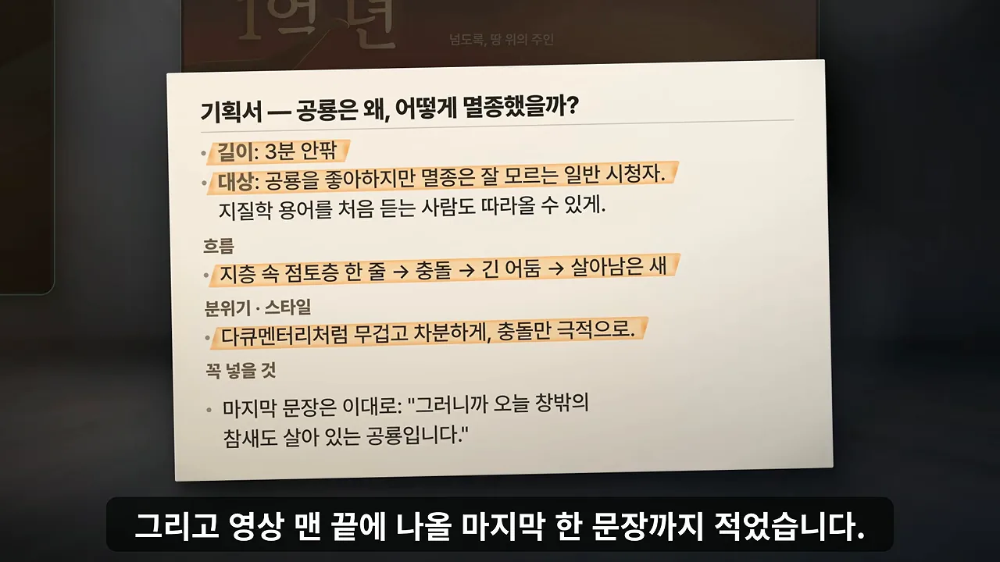
첫 결과를 보고 몇 번 더 고쳐 달라고 했고, 그때마다 Claude Code가 다듬었어요. 영상은 이리듐이 유난히 많은 점토층(1980년 앨버레즈 연구팀)에서 출발해, 1991년 유카탄반도에서 확인한 칙술루브 충돌구로 이어져요. 아래 장면이 그 충돌구 위치를 지도에 표시한 부분이에요.
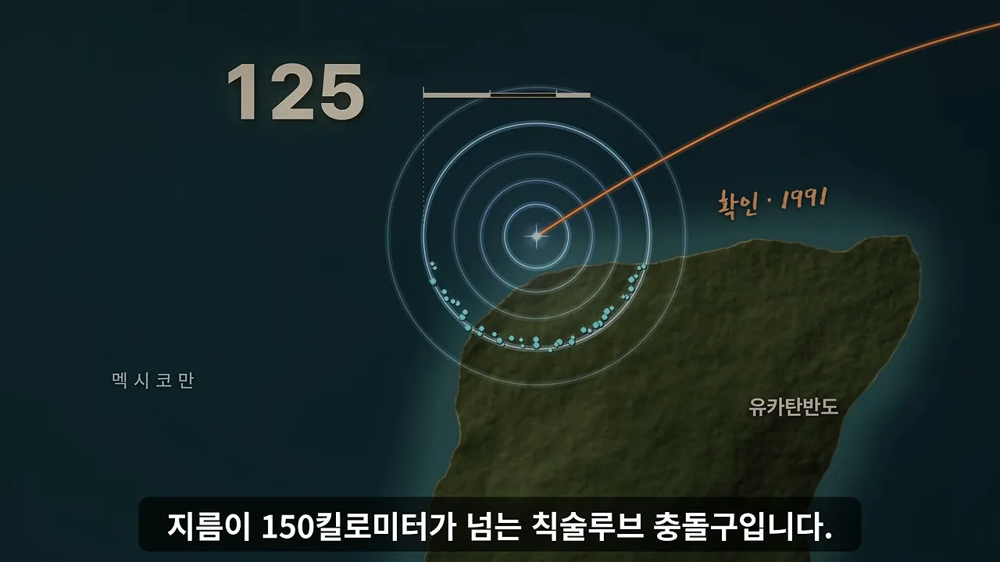
이어서 먼지와 그을음이 햇빛을 막아 광합성이 두 해 가까이 멈췄다는 2023년 연구, 데칸 트랩 화산설과 충돌을 주된 원인으로 본 2020년 연구를 거쳐, 기획서에 적은 대로 "오늘 창밖의 참새도 살아 있는 공룡"이라는 문장으로 끝나요.
발표자의 정리는 간단해요. 준비물은 Claude Code, 이 스킬, 그리고 주제 한 줄이에요.